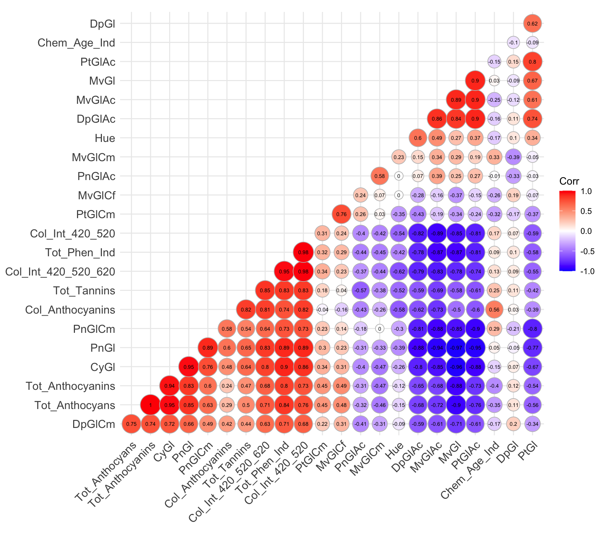

Early Indications of Subtyping within Alicante Bouschet Wines
AOC Valdeorras, Galicia, Spain — STAT394 Group Report
The question
- Phenolic composition (anthocyanins, tannins) drives red wine colour, bitterness, astringency, ageing
- Anthocyanin “fingerprint” is under strong genetic control → potentially useful for verifying grape cultivar
- Revilla et al. (2016) compared Mencía (principal Valdeorras red) vs. Alicante Bouschet (teinturier blending grape) — 30 wines, 2014 vintage — using PCA/LDA on spectrophotometric and HPLC blocks separately
Our contribution: combine all 23 phenolic variables into one joint analysis
- Does the full profile separate cultivars as cleanly as either block alone?
- Is multivariate normality a reasonable assumption?
- Are there atypical wines, or hidden structure within a cultivar?
The data
- 30 wines: 20 Mencía, 10 Alicante Bouschet (2014 vintage, post-malolactic fermentation)
- 23 numeric variables combined from Revilla et al.’s Tables 1, 2, 5, 6:
- 5 spectrophotometric/colour variables
- 4 anthocyanin/tannin concentration variables (mg/L)
- 14 relative-proportion anthocyanins (5 monoglucosides, 9 acylated derivatives)
Key descriptive pattern: Alicante Bouschet consistently shows
- ~2× the colour intensity and total phenol index (teinturier character — pigmented flesh, not just skin)
- ~2–3× the anthocyanin/tannin concentrations, but with 2–3× the variability of Mencía
Redundancy among the 23 variables

- 51 of 253 possible pairs (20.2%) correlate at |r| > 0.8 — substantial redundancy
- Near-duplicate measurements:
Tot_Anthocyanins vs Tot_Anthocyans, r = 0.998
- Compositional constraint: monoglucoside proportions sum to ~100%, so they’re mechanically correlated (e.g.
MvGl/PnGl, |r| ≈ 0.95–0.97)
This redundancy motivates dimensionality reduction via PCA
Is multivariate normality reasonable?
Shapiro-Wilk tested per variable, per cultivar (pooling would conflate the cultivar mean gap with real non-normality)
- 12 of 42 within-cultivar tests reject normality at 5% — far more than the ~2 expected by chance
- Concentrated in:
- Mencía’s total concentration variables (
Tot_Anthocyanins, Tot_Anthocyans, Tot_Tannins)
- Coumaroylated derivatives, in both cultivars
Marginal normality is necessary for MVN — these rejections are sufficient to conclude neither cultivar’s raw phenolic profile is multivariate normal
Caveat: Alicante Bouschet (n=10) has lower power to detect non-normality than Mencía (n=20) — fewer rejections there isn’t necessarily “more normal”
Why PCA
Two independent problems point to the same fix:
- Singular covariance matrices — with 23 variables and only 20 (or 10) wines per cultivar, \(\hat\Sigma\) has rank ≤ n−1 and can’t be inverted → Mahalanobis distance is undefined on the raw variables
- Redundancy — the correlation structure shows much of the 23-dimensional variation is not independent
Approach: retain PCs with variance > 1 (Kaiser criterion)
- First 5 PCs retain 90.9% of total sample variance
- Gives an invertible, lower-dimensional space in which to compute Mahalanobis distances and assess normality
Normality of the principal components
- Pooled: PC1 (p = 0.0001) and PC5 (p = 0.01) reject normality
- Within cultivar: PC1 and PC5 are fine, but PC2 rejects in both cultivars (Mencía p = 0.0161, Alicante Bouschet p = 0.0095)
Reducing dimensionality helped, but did not fully resolve non-normality — Mahalanobis-based p-values later on should be read as approximately, not exactly, valid
Cultivar separation
- PC1–PC2 scatterplot clearly replicates Revilla et al.’s cultivar separation
- Confirmed statistically: every wine is highly inconsistent with the opposing cultivar’s distribution (p < 0.0001, except one wine at p = 0.0057)
- Within-cultivar Mahalanobis distances flag only a few mildly unusual wines (M7, M8, M17)
The full 23-variable joint profile separates cultivars just as reliably as Revilla et al.’s separate block-wise analyses
The headline finding: structure within Alicante Bouschet
PC1–PC2 restricted to Alicante Bouschet shows two distinct clusters:
- Cluster 1: T21, T27–T30 (tight grouping)
- Cluster 2: T22–T26 (diverges clearly along PC2)
Mahalanobis evidence is decisive:
- Every sample highly consistent with its own theorised cluster (p ≥ 0.202)
- Every sample highly inconsistent with the other cluster (p < 0.0001)
- Critically, this is mutual — not just Cluster 2 wines looking odd from Cluster 1’s viewpoint
Why might this be happening?
- Alicante Bouschet already showed 2–3× the variability of Mencía on concentration variables (descriptive stage)
- Revilla et al. attributed this to variable maceration length — the cultivar is often managed to different blending targets
- Our finding refines this: rather than one heterogeneous group with a long tail, the data are more consistent with two discrete phenolic profiles
Plausible explanation: different maceration regimes or blending targets across batches — but we have no winemaking records to confirm this directly
Limitations
- Subgroup analysis rests on 5 wines per cluster, tested against covariance estimated from those same 5 observations (3 PCs) — small enough to be suggestive, not confirmatory
- PC2’s non-normality means the chi-square reference distribution underlying all Mahalanobis p-values is only approximately valid
- Overall dataset is small (n=30) and unbalanced (20 vs. 10) — limits power throughout, especially for Alicante Bouschet-specific claims
Conclusion
- The combined 23-variable phenolic profile reliably separates Mencía from Alicante Bouschet, replicating Revilla et al. without needing separate variable blocks
- Alicante Bouschet itself appears phenolically non-homogeneous — splitting into two sub-clusters with a separation comparable to the between-cultivar separation
- Given small sample size, this is a hypothesis-generating result, not a confirmed finding — worth testing in a larger sample with known maceration/blending records
Questions?